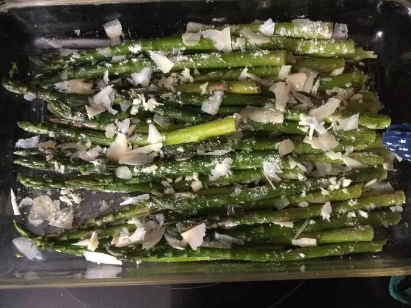

Oven-Roasted Asparagus

Description
The best way to cook asparagus by far! No more mushy, flavorless steamed asparagus! You will never see it the same again.
Ingredients
- 1 bunch thin asparagus spears, trimmed
- 3 tablespoons olive oil
- 1 ½ tablespoons grated Parmesan cheese (Optional)
- 1 clove garlic, minced (Optional)
- 1 teaspoon sea salt
- ½ teaspoon ground black pepper
- 1 tablespoon lemon juice (Optional)
Steps
- Preheat the oven to 425 degrees F (220 degrees C).
- Place asparagus into a mixing bowl; drizzle with olive oil and toss to coat. Sprinkle with Parmesan cheese, garlic, salt, and pepper. Arrange asparagus in a single layer in a baking dish.
- Bake in the preheated oven until just tender, 12 to 15 minutes depending on thickness. Sprinkle with lemon juice just before serving.